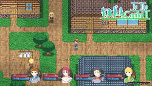
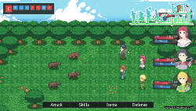
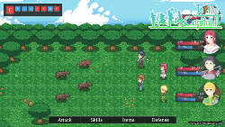
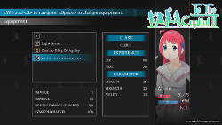
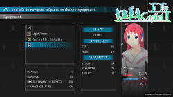
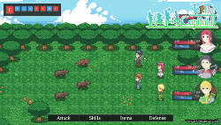
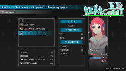

To The Capital 2
To The Capital 2 is a game in the genre jRPG with classic turn-based battles in which you have to travel together with four heroes visiting a lot of cities, dungeons, mysterious places and fight with various bosses.Storyline
Preventing the overthrow of the current authorities and getting to the capital, Luis receives a task from the king to find fugitive participants in the failed coup.Together with Ralph, Bernard and Amelia joined on the orders of the command, they start a journey.



 



 




Features
LandscapeForests, plains, jungles, snow-capped mountains and deserts.
CitiesDialogues with local people, trade and refreshment.
DungeonsA dozen dungeons with a various bosses.
Special locationsScenic unusual places with unique bosses.
4 classes of charactersEach class has its own skills and bonuses.
Craft itemsPreparation of food and drugs.
Platforms